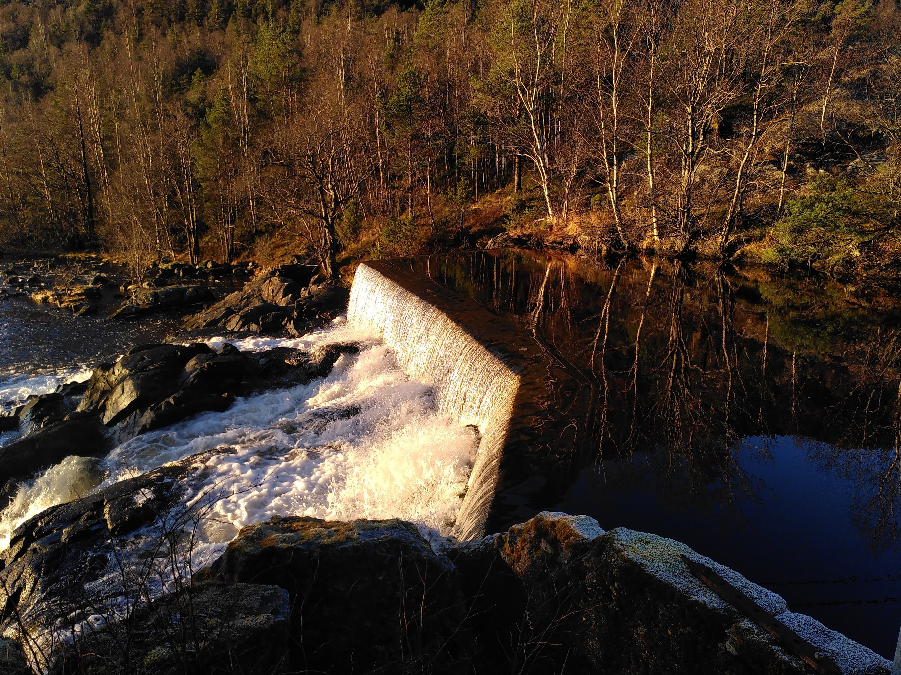
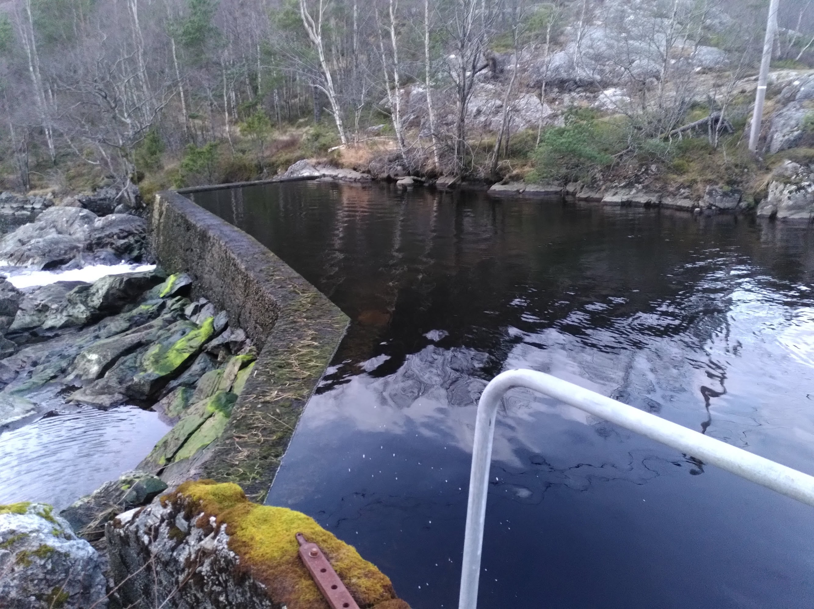

For å sikre stabilitet og kraftproduksjon må kraftverket overvåkes og kontrolleres regelmessig. Mengde vann og vedlikehold av risten gjøres ved vanninntaket, ved broen fra Giskeli-vatnet til elven ved demningen.
Hvis det er mye vann som renner over demningen, kan alle tre turbinene (1, 2 og 3) produsere kraft. (NB: gjelder ikke hvis en vikar overvåker strømforsyningen, da er turbin 3 slått av).
Hvis vannet så vidt er over demningen, eller så vidt under den, må turbin 2 slås av først. Ikke glaum å sjekke amperemeteret på kraftverket (turbine 2). Hvis den viser mindre enn 100A, må turbin 2 slås av.

Vann renner IKKE over demningen: I dette spesifikke tilfellet er det bare turbin 3 som produserer strøm. Årsaken er at det produseres nok til å dekke våre egne behov.
Ikke glaum å sjekke amperemeteret på kraftverket (turbine 1). Hvis den viser mindre enn 100A, må turbin 1 slås av.

NB: Turbin 1 er koblet til lyset over døren til kraftverket. Når dette lyset er av, produserer generator 1 (koblet til turbin 1) ingen strøm! Ekstra kontroll!
Vedlikehold av risten
Etter uvær og mye vind er det ofte lurt å sjekke risten ved vanninntaket. En rive (med langt skaft) kan brukes til å fjerne kvister og vannplanter fra risten. Se videoen nedenfor.
Når du lurer på noe: ta kontakt med Martijn B. via messenger, eller: +47 980 63 823